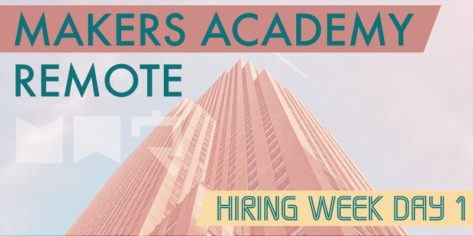

After our graduation last week, and then my first two days off in a long time, it feels dangerously easy to slip back into a slower pace this week. However we've been warned that hiring week will be quite intensive, that it will give up lots of information to act upon, and will put us through several practice technical tests.
LinkedIn, CVs and repo cleaning
Today was hosted by Ruben, Makers Academy's COO and head of careers. Ruben started by explaining to us a bit about what to expect from the coming week. We were then told how important it is to be active on LinkedIn, and to connect with as many of our cohort and Makers Academy staff as possible to broaden our networks. To assist with this I decided to make a Google sheet during my lunch break that we could use to share our LinkedIn details with the rest of the cohort, and Ruben said that's exactly the kind of proactive thinking he likes to see. Great start!
The remainder of the day was spent creating our GitHub CVs, and cleaning up our GitHub repos. GitHub CVs are a great idea, and apparently the brainchild of somebody at Makers Academy. They're precisely what they sound like, a GitHub repo intended purely to act as a CV, in which you can list your skills, experience and education on a text file, as well as links to any repos you're keen to display. Creating a CV this way is hugely useful as it will be available to anybody with the link, and by its very nature is intrinsically tied to your body of work.
Cleaning our GitHub repos basically amountted to tidying up the READMEs, as well as any loose ends within the code, of which there can be a lot due to the fast paced nature of this course. Tidying all of our dozens of repos could take a very long time, so the emphasis has specifically been on tidying the repos that we're choosing to link within our GitHub CVs.
Today Ruben released a complete timetable for the week, and from that we've learned that a careers fair has been organised at Makers Academy HQ on Friday, which us remote students are welcome to attend if we're able to. Several of Makers Academy's hiring partners who are currently seeking junior developers will be there, so I absolutely will be there too, as will several other Remote students who cab get to London. It'll be interesting to speak with the hiring partners and to get used to selling myself to them as a potential employee, and it will be equally interesting to finally meet some of my digital cohort in person, on the very last day of the course!